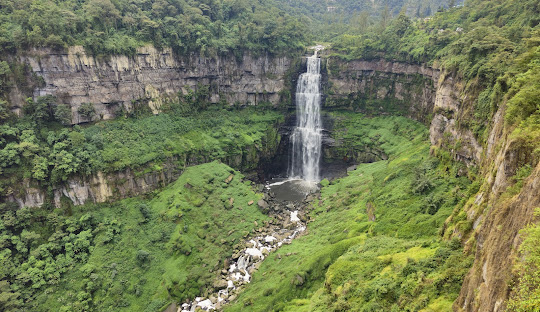
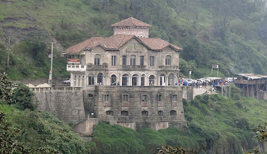
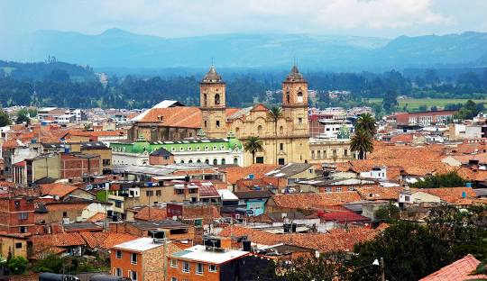
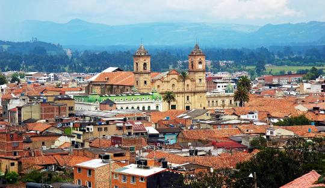
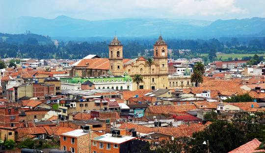

Sector Económico
Cundinamarca es una de las regiones más importantes de Colombia en términos económicos debido a su cercanía con Bogotá, la capital del país. Su economía se basa en diversos sectores clave:
- Agricultura y ganadería: Es un importante productor de papa, maíz, frutas, hortalizas y flores, destacándose como uno de los principales exportadores de flores del país. También tiene una fuerte producción lechera y avícola.
- Industria y manufactura: Cundinamarca alberga zonas industriales en municipios como Soacha, Funza, Mosquera y Zipaquirá, donde se desarrollan sectores como el textil, la producción de alimentos, la metalmecánica y la química.
- Energía e infraestructura: Cundinamarca es clave en la generación de energía hidroeléctrica y cuenta con una creciente inversión en infraestructura vial y de transporte.
Turismo
Cundinamarca ofrece una gran variedad de destinos turísticos, que combinan naturaleza, historia y cultura. Algunos de los más visitados son:
- Catedral de Sal de Zipaquirá: Una de las maravillas de Colombia, esta catedral subterránea construida en una mina de sal es un importante destino turístico y religioso.
- Parque Nacional Natural Chingaza: Un ecosistema de páramo donde nacen algunas de las principales fuentes de agua para Bogotá, con paisajes únicos y una biodiversidad extraordinaria.
- Tequendama y el Salto del Tequendama: Una impresionante cascada con vistas espectaculares y un antiguo hotel con historias de misterio.
- Guatavita y la Laguna de Guatavita: Un hermoso pueblo colonial cercano a la mítica laguna de Guatavita, donde se cree que surgió la leyenda de El Dorado.
Comida Típica
La gastronomía de Cundinamarca se caracteriza por el uso de ingredientes locales y recetas tradicionales. Algunos de los platos más representativos son:
- Ajiaco santafereño: Una sopa espesa preparada con tres tipos de papa, pollo, mazorca, alcaparras y crema de leche, acompañada con aguacate y arroz.
- Fritanga cundiboyacense: Un plato típico que incluye chorizo, morcilla, longaniza, chicharrón, papa criolla y plátano maduro.
- Cuchuco de trigo: Una sopa espesa hecha con trigo, papa, espinazo de cerdo y arveja.
- Almojábanas y garullas: Panecillos de maíz y queso, muy consumidos en la región.
- Tamal cundiboyacense: Masa de maíz rellena con carne de cerdo, pollo, papa, zanahoria y garbanzos, envuelto en hojas de plátano y cocido al vapor.
Galeria de Imagenes


 

